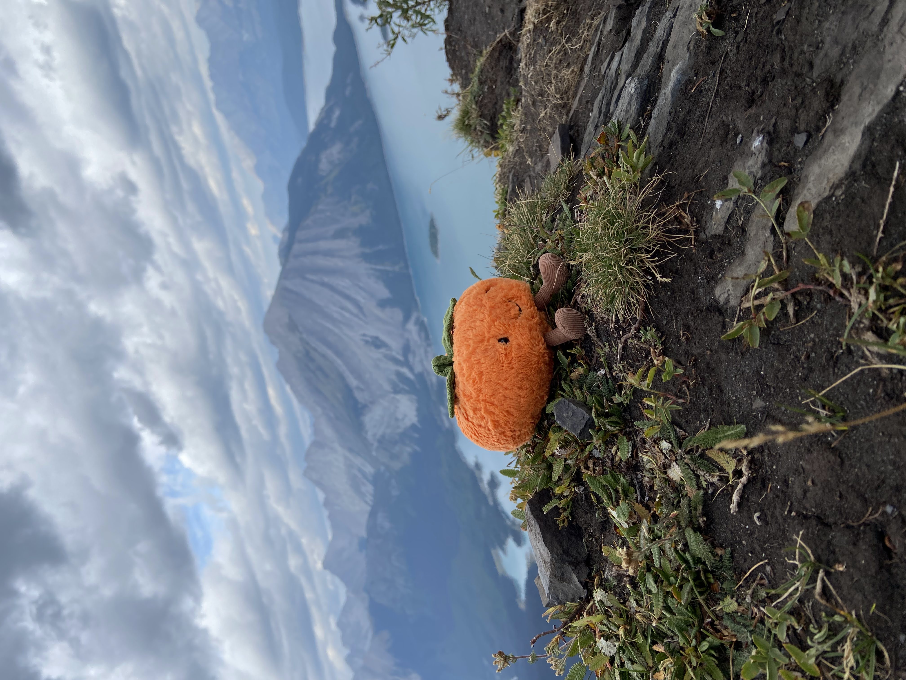

I enjoy reading because it helps me relax and it is an activity I like doing in my free time. I particularly enjoy novels that make me feel like I am in a different place or time. My favourite books are probably the Harry Potter series, the Hunger Games and Dry. Though I enjoy many different genres of books, I do like dystopian or fantasy novels.
I usually get my books from here.
Here's a picture of a coffee icecream bubble tea
Bubble tea is always a refreshing and delicious drink no matter the season. It is a drink that is unique for the small tapioca bobas (the best part) it contains. Bubble tea originated in the 1980's in Taiwan but it is now a popular drink all across the world! My favourite flavours of bubble tea are tiramisu milk tea, taro and the original brown sugar.
Probably the best bubble tea shop I have tried...
Here is a picture at the very top of Sarrail Ridge
I love hiking because it allows me to enjoy the sights and sounds of nature while allowing me to challenge myself. It makes me embrace my sense of adventure because sometimes I have to face my fears or get out of my comfort zone. Here are some of my favourite hikes that I have completed: